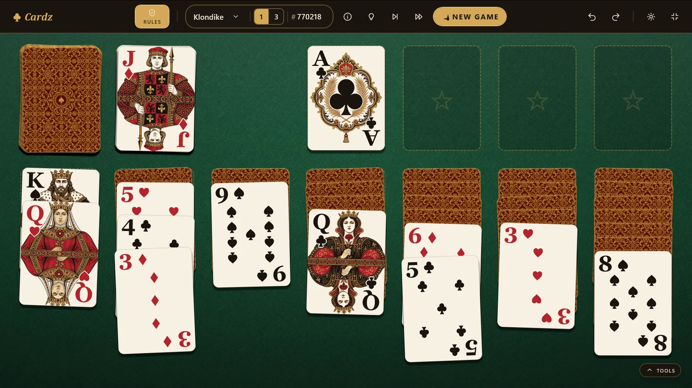
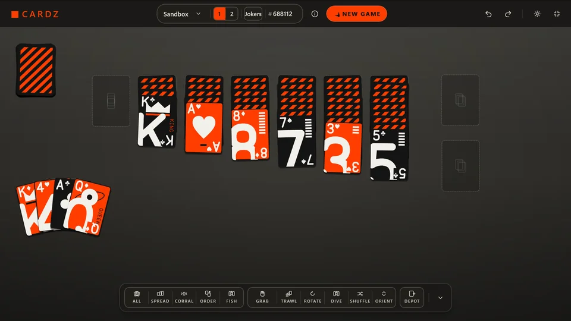
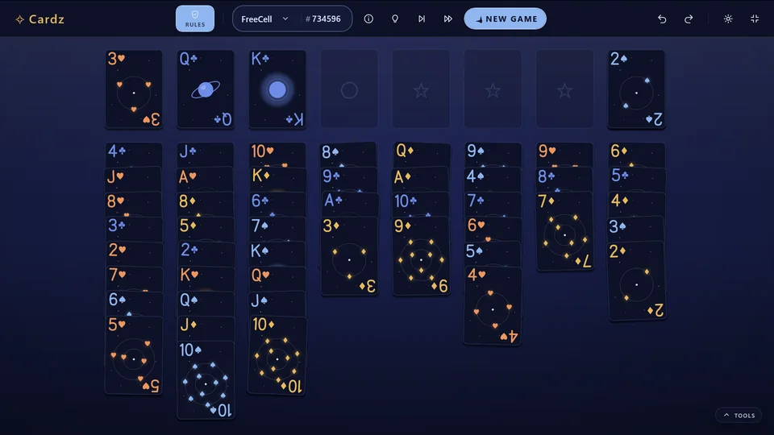
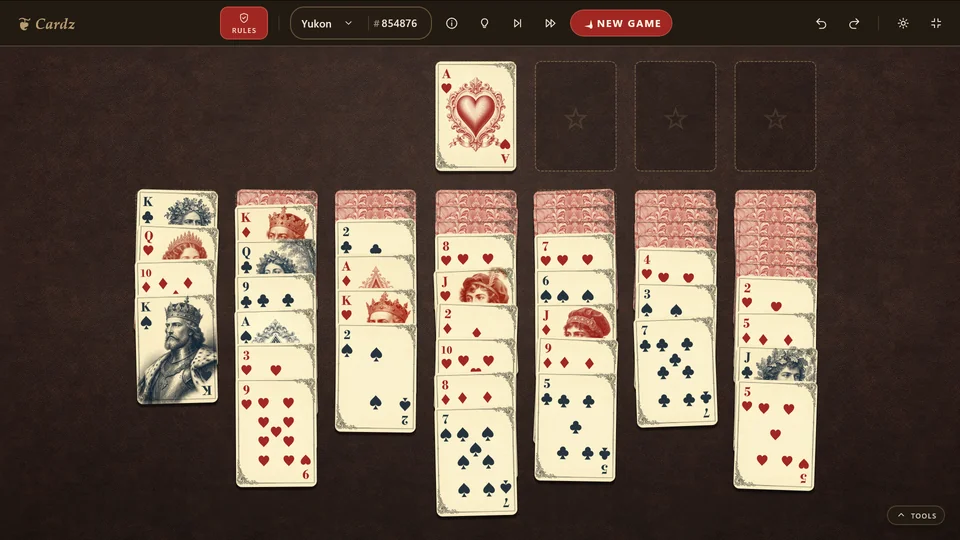
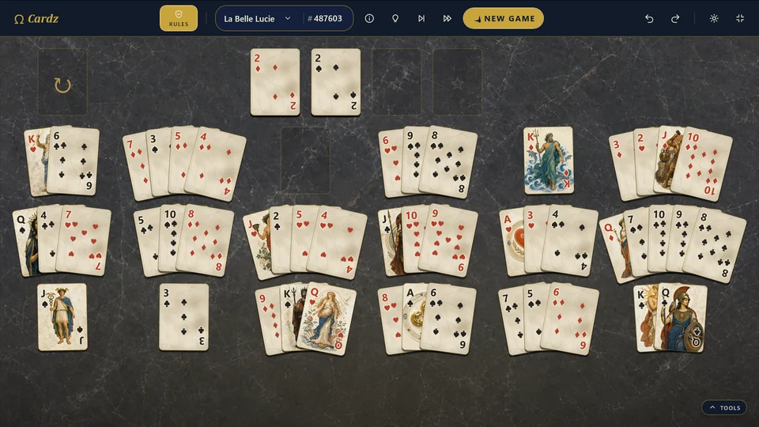
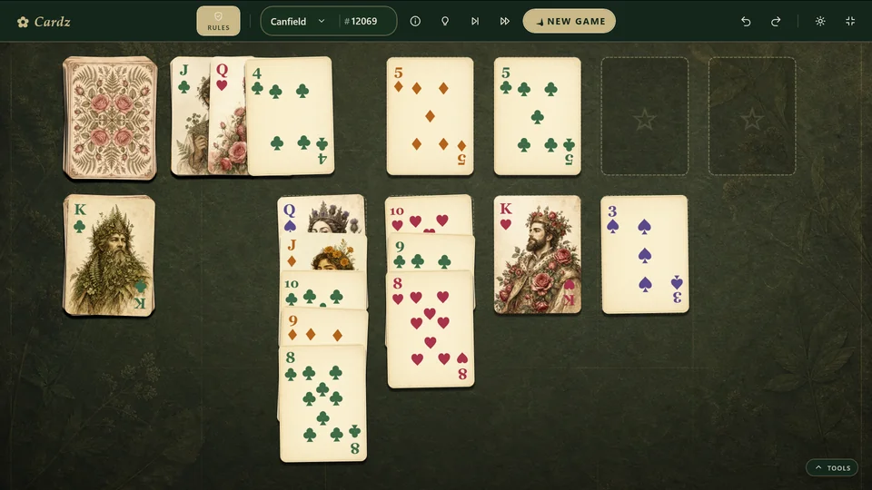

Beautiful by design
Unique decks and table themes, each with its own ambience.
See the decksRules, optional
Cardz is a unique solitaire game: known games with rules that can be turned off, or a completely rule-free Sandbox where the only thing you're given is a deck of cards. Cardz gives you the cards, the tools, and the freedom to decide the rest.

The heart of Cardz
Sandbox begins with a table and a deck. Move cards anywhere, make up a game as you go, or recreate a family favourite. Table modes let you gather, spread, fish, rotate, shuffle, and reshape the cards without telling you what is allowed. Place landing spots for your cards, then keep the layout to play again from Your games.

Pick your game
From the games everybody knows to ingenious solitaires worth discovering. Twenty-two of them, including variations, and the collection is built to keep growing.
Pairs add up to thirteen
Scarab deck
Every card in plain sight
Deepfield deck
Move whole tails at once
Filigree deck
Eighteen fans, two redeals
Olympus deck
The first card sets the pace
Herbarium deckUnpick the weave
Valhalla deckDesigned to feel good
Unique decks and table themes, each with its own ambience.
See the decksFluid drag, flip, and deal interactions, built for touch, pen, mouse, and keyboard.
Your game saves silently and resumes instantly. No account, no cloud, no fuss.
High contrast, a colourblind-friendly theme, and reduced motion support. In addition, ruled solitaire games have screen-reader narration and full keyboard play.
Stuck on a ruled game? Try using a hint. Or turn the rules off completely—only the depots' structure is maintained. No need to tell anyone.
Your next game is waiting